Plasma Donut Controller was my first Engineering Physics capstone, project 2514 in ENPH 459, sponsored by the UBC Engineering Physics Project Lab. The goal was to build a device that creates, confines and eventually controls a radio frequency plasma toroid inside a glass globe of noble gas, and to develop the theory that explains why the toroid holds its shape.
The physics behind this is older than it looks. In 1889 J.J. Thomson placed a gas discharge tube inside a coil carrying a high frequency AC current, observed a coherent plasma torus, and wrote a theory to explain it. Technological limits kept most of the twentieth century from reproducing him cleanly, and no consensus formed on why the torus is stable. Our sponsor wanted a working, reproducible apparatus as the foundation for answering that, with a second stage that moves the toroid along a glass tube.
My role was the driver circuit. I owned the Class E oscillator that generates the megahertz alternating current in the primary coil, from first principles through LTspice modelling, PCB assembly, and the zero voltage switching debugging that was ultimately what got the toroid to appear.
The physics we had to satisfy
{kind=link}
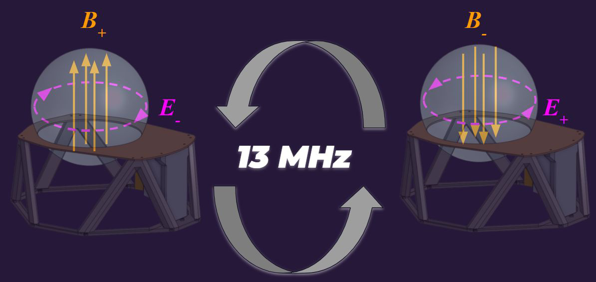
Two conditions have to be met at the same time. The gas has to ionize, and the resulting plasma has to stay confined.
Ionization comes from a Townsend avalanche. A neutral gas sitting in an electric field looks inert, but it always carries a few stray free electrons. The field accelerates them, they ionize atoms on collision, and each collision releases more electrons, which grows the electron population exponentially. Working against that is recombination, so the field has to clear the breakdown voltage set by Paschen's law, which depends on gas pressure and the size of the system. A localized spark supplies a seed of free electrons and makes that threshold reachable, which is one of the two jobs of our device.
Confinement comes from the geometry of the field. An open electric field lets electrons drift to the glass and recombine, which kills the discharge. An alternating linear magnetic field, by Faraday's law, induces an azimuthal electric field: the field lines close on themselves inside the globe, so electrons keep circulating and keep the avalanche going. We drive that field at roughly 13 MHz, which is fast enough that the much heavier ions stay nearly stationary while the electrons respond. Producing that alternating field is the other job of our device.
{kind=link}
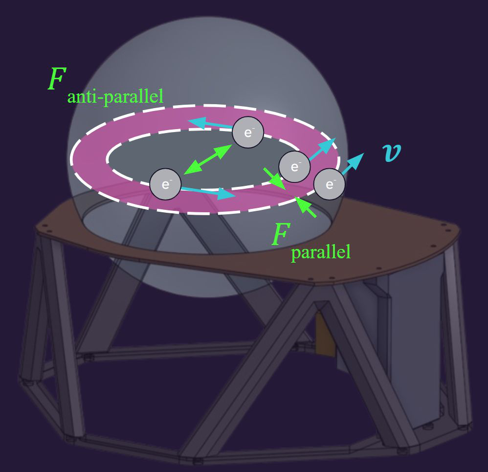
The toroidal shape itself comes from the pinch effect. Electrons circulating in the same direction generate magnetic fields that pull them together, constricting the discharge in the poloidal direction. Electrons on opposite sides of the ring travel in opposite directions and push apart, which hollows out the centre. Why the ring survives that repulsive term is exactly the open question the project exists to chase, with negative space charge at the outer edge and convective rotation as the leading candidates.
System
{kind=link}
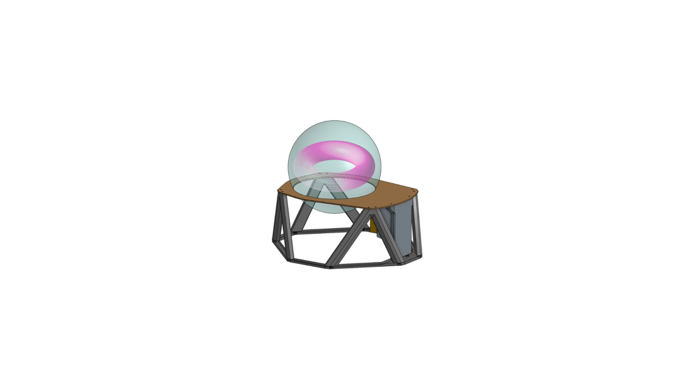
The device is three subsystems. An arc start circuit fires a high voltage flash at the outside of the glass to seed the avalanche. A driver circuit puts a large megahertz alternating current through a primary coil under the globe. The plasma itself behaves as the secondary winding of a transformer, inductively coupled to that primary coil, which is how energy keeps reaching it once it exists.
Driver circuit
{kind=link}
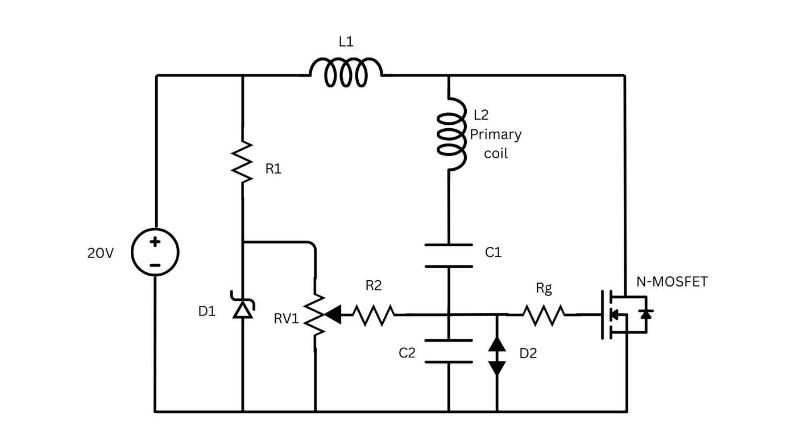
Transferring real power into the plasma means a large current in the coil at radio frequency, which is what a Class E oscillator is good at. The primary coil L2 sits in series with a capacitor to form an LC tank. Driven at its resonant frequency the inductive and capacitive reactances cancel, the impedance collapses, and a very large current circulates through the coil, producing the changing magnetic field that initiates, sustains and confines the plasma.
Energy gets into that tank the way it does in a boost converter. When the MOSFET is on, supply current runs through the feed inductor L1 to ground and stores energy in it, while the tank capacitor discharges into the primary coil so the energy stays inside the tank. When the MOSFET turns off, L1 resists the drop in current, reverses polarity and dumps its stored energy into the tank, charging both the capacitor and the coil. Energy enters every cycle and the only way out is losses, so it accumulates until the losses per cycle match the injection per cycle. It is a harmonic oscillator being pushed at resonance, in the same sense as pushing someone on a swing at the right moment each time.
{kind=link}
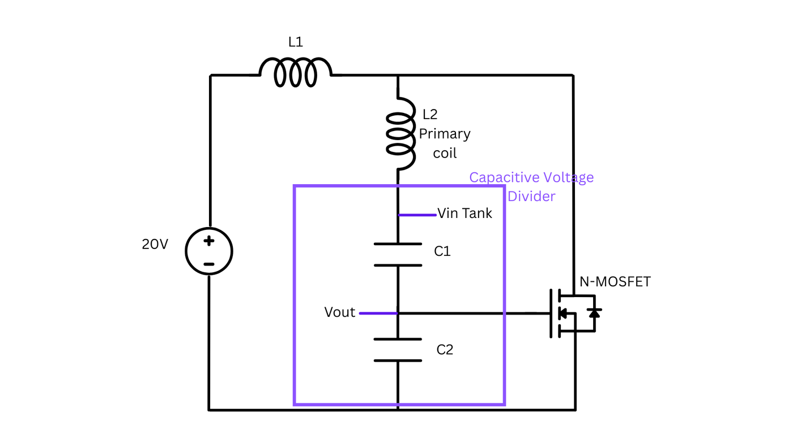
The switching has to happen at the tank's natural frequency for any of that to work, and nothing external tells the circuit what that frequency is. The solution is to let the tank drive itself: a capacitance divider across the tank taps a signal with the same frequency and a fraction of the amplitude, and that signal goes to the MOSFET gate. A potentiometer adds an adjustable DC bias so the gate waveform can be shifted above and below the threshold voltage, which is both how oscillation is started from rest and how the on time is trimmed once running. A zener holds that bias steady, a TVS diode protects the gate from transients, and the gate resistor sets the phase delay that the next section is about.
Simulating the plasma as a coupled coil
{kind=link}
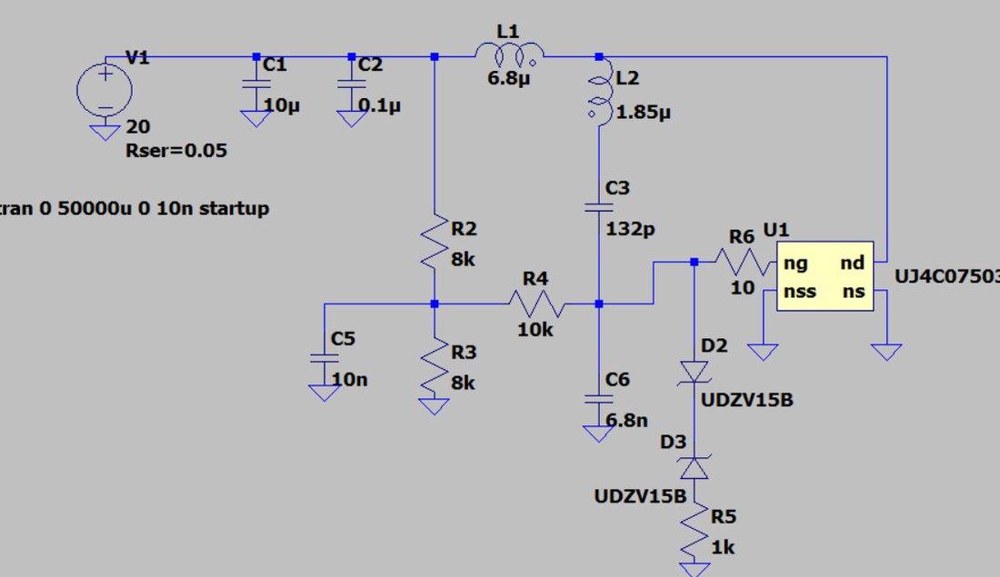
Before the boards arrived I built the circuit in LTspice, which is where I confirmed the boost behaviour: 20 V from the supply, and up to 170 V across the feed inductor as it discharges into the tank, adding to the supply voltage on the way in.
The more interesting simulation was the plasma. I modelled it as the secondary winding of a transformer whose primary is the tank inductor, with a coupling coefficient of 0.1 to represent the loose air and glass gap, a series resistance for the plasma's own resistivity, and a capacitance for the glass acting as a dielectric. I sized the resistance from a published xenon plasma resistivity together with our globe geometry, which put the plasma at roughly 1.8 ohms. Sweeping the secondary's resistance, inductance and capacitance barely moved the primary side at all, while the coupling coefficient moved it immediately: raising it from 0.1 to 0.9 dropped the tank voltage from about 1.8 kV to 1.6 kV. That told us the coupling coefficient, which is set by the physical distance from the globe to the coil, is the parameter worth building a mechanism around, and it is the one the second stage of the project is designed to vary.
Zero voltage switching, which is where the project actually turned
A MOSFET has an inherent drain to source capacitance. When the device is off, that capacitance charges to a high voltage, and if the device then turns on while it is still charged, the transistor eats a large instantaneous voltage drop as heat. Zero voltage switching means arranging for the drain voltage to be at its minimum at the moment the gate goes high. The gate and drain waveforms are naturally in phase in this topology, so achieving it means deliberately delaying the gate, which we do with a resistor in series with the gate that changes the RC time constant charging the gate capacitance.
{kind=link}
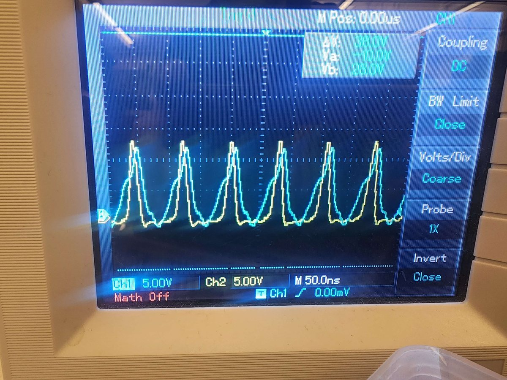
For a long stretch of the project the board would light the gas faintly but would not form a toroid. The neon glowed, and brightness is a seductive false signal, but a faint diffuse glow is capacitive coupling, not the inductive coupling that produces a ring. Energy was going somewhere other than the plasma, and the MOSFETs heating up quickly was the clue as to where.
Debugging that took two separate corrections. The first was measurement: probing the 20 V and 12 V rails while the tank was oscillating showed them swinging as sine waves, which would have destroyed the board if it were real. Switching to differential probes made the oscillation disappear, confirming it was common mode noise picked up from the coil's field rather than anything happening on the rails. The second was the real fault. Probing gate against drain showed the MOSFETs were not zero voltage switching at all.
Fixing it was a sweep of the gate network. The reference design used 5 ohms. We tried 10, we tried 40, we tried adding capacitance between gate and source to stretch the RC constant, and that last attempt failed loudly, with smoke coming off the board as the heat went into the FETs and capacitors instead of the plasma. LTspice narrowed the range, and 10 ohms on the gates was what finally landed it.
{kind=link}
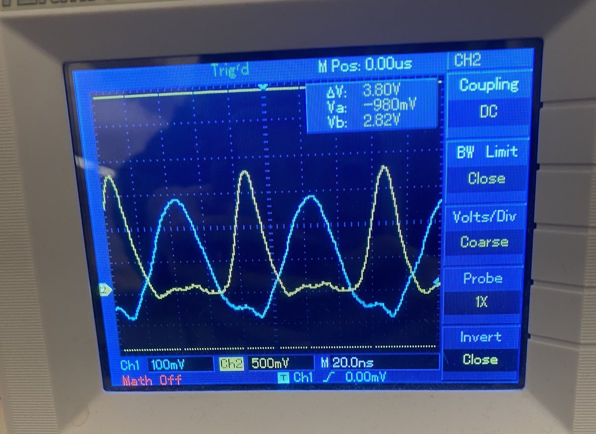
With zero voltage switching achieved, the neon coupled properly and the toroid appeared. Nothing about the coil, the globe or the gas had changed. The entire difference was where the energy was being spent.
Arc start circuit
{kind=link}
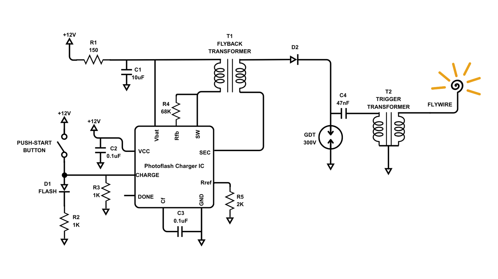
The driver's field alone will not ionize neutral xenon from rest, so the avalanche needs seeding, and it needs seeding the same way every time if the results are going to mean anything. Rubbing the globe for static works and is not reproducible.
The arc start circuit is adapted from a xenon flashlamp trigger. Holding the push start button lets a photoflash charger IC discharge a capacitor into a flyback transformer, which steps 12 V up to 300 V. That 300 V accumulates across a gas discharge tube, which is a component that holds off voltage until it breaks down and then becomes a path to ground, so it acts as a precise threshold: the capacitor in parallel with it charges to exactly 300 V and then dumps into a trigger transformer, whose high turns ratio produces roughly 3000 V. That flash runs down an exposed flywire touching the outside of the globe and seeds the gas.
Board and mechanical
{kind=link}
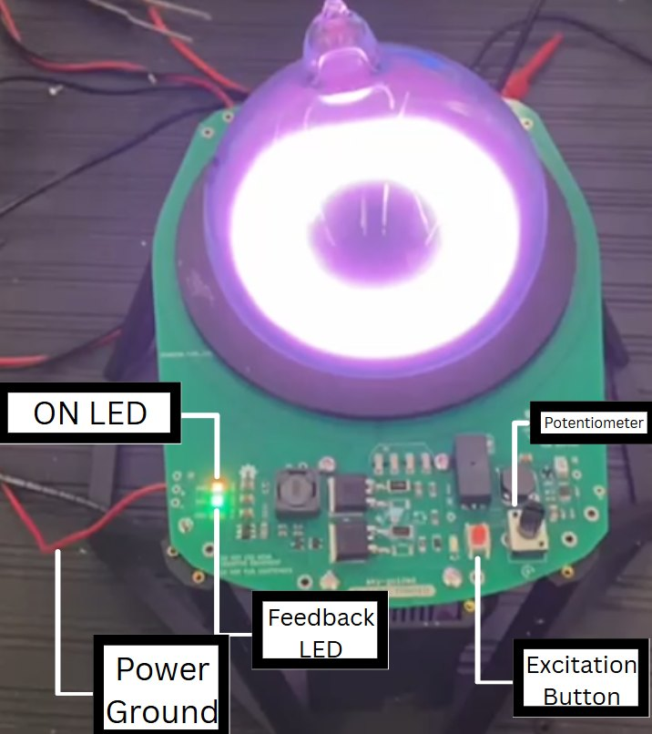
The design is a single board carrying the driver, the arc start chain and the primary coil, which is etched into the copper as a two turn spiral with the globe seated directly in its centre. Everything is surface mount, and I assembled and brought up the boards by hand.
Bring-up followed a fixed order, because the board has 3 kV and several amps on it. Continuity and shorts with a multimeter first, then power at low voltage to confirm the linear regulator outputs 12 V and the MOSFETs stay off with the potentiometer at zero, then dial the potentiometer up while watching for the feedback LED that indicates a current is being induced in the sense loop by the primary coil. Only after that is the arc start button pressed.
{kind=link}
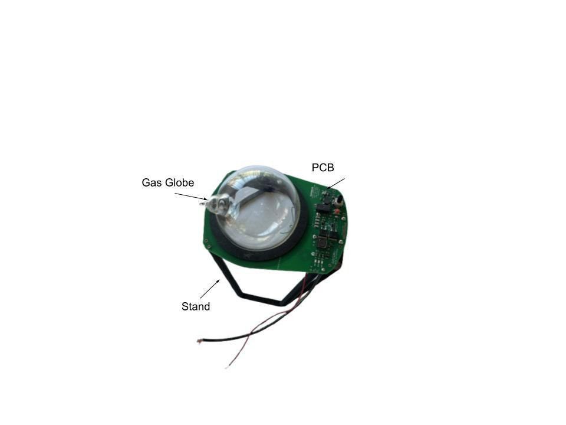
We also wrote and followed a safety procedure the team held itself to: one person on a live board at a time, one hand only, safety glasses whenever something can arc, long tools for hot switches, and grounding the capacitors and confirming with a meter before assuming a powered down board is safe. The high voltage points, the flywire, the driver capacitors, the coil trace and the MOSFETs were each labelled with what they do when touched. We lost one board early to a reversed supply, which is exactly the sort of thing the procedure exists to prevent, and rebuilt rather than debug a damaged one.
Where it ended up
By the end of the year the device produced and sustained a plasma toroid in neon, driven by a Class E oscillator running at zero voltage switching, with a reproducible arc start. Three globe system prototypes were handed over, along with the schematics, the LTspice model, the board files and the mechanical CAD.
{kind=link}
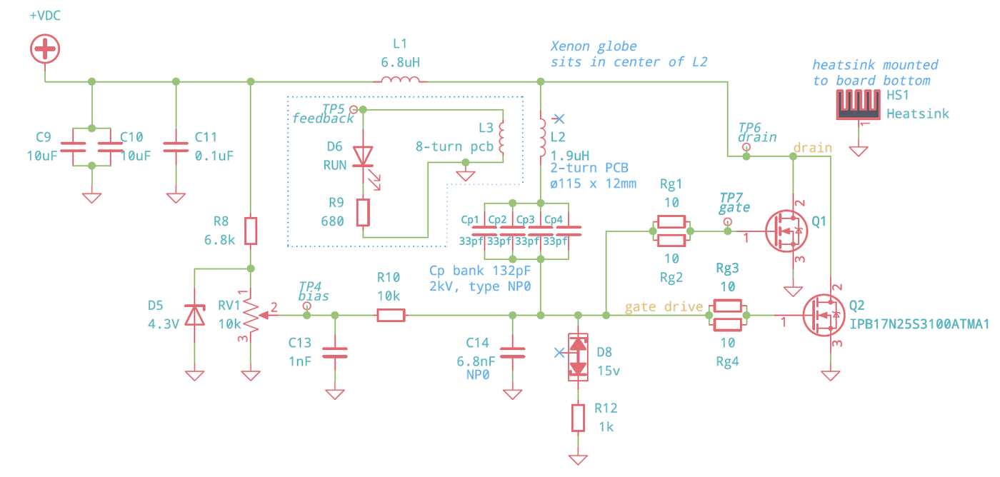
Xenon never lit. That is the honest headline limitation and we did not fully explain it: at our pressure the breakdown voltage for xenon is far higher than for neon, so the suspicion sits with the arc start circuit not delivering enough field at the glass rather than with the driver. There is a second unexplained behaviour worth recording, which is that the neon coupled well only while the scope probes were attached. My theory is that the probes were acting as pull down resistors and letting the gate capacitance discharge faster between cycles. Adding explicit pull downs did not reproduce the effect cleanly: 1 Mohm produced a fluctuating gate waveform consistent with the gate discharging several times inside one tank cycle, and 47 kohm divided the bias down so far that the MOSFETs never switched at all.
Heat is the other honest limit. The gate resistors were specified for 1 W and were seeing on the order of 12 W, so they burned. Higher rated parts and a heatsink extended the runtime but did not remove the underlying dissipation problem.
Next steps
{kind=link}
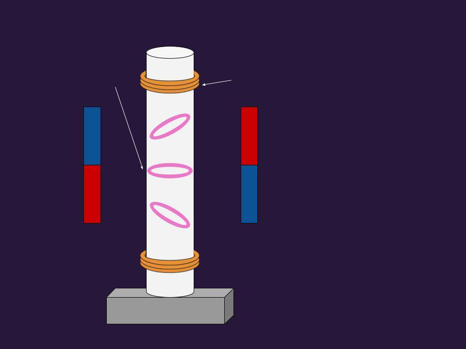
The recommendations we handed to the sponsor were to instrument the system rather than to add features. Current and voltage readings give the plasma's electromagnetic properties, gas pressure and density are what set the avalanche condition, and emission spectroscopy identifies impurities and estimates the ion to neutral ratio. On top of that, a mechanism that raises and lowers the globe relative to the coil would let the next team sweep the coupling coefficient directly, which the simulation had already flagged as the parameter that actually moves the system.
The second stage swaps the globe for a glass tube with two primary coils, with the intent of moving the toroid along it by coupling it to one coil and then handing it to the next, using external magnets to steer and coil orientation to perturb the convective behaviour inside the plasma. Getting a stable, reproducible toroid on the bench this year is what makes any of that measurable.